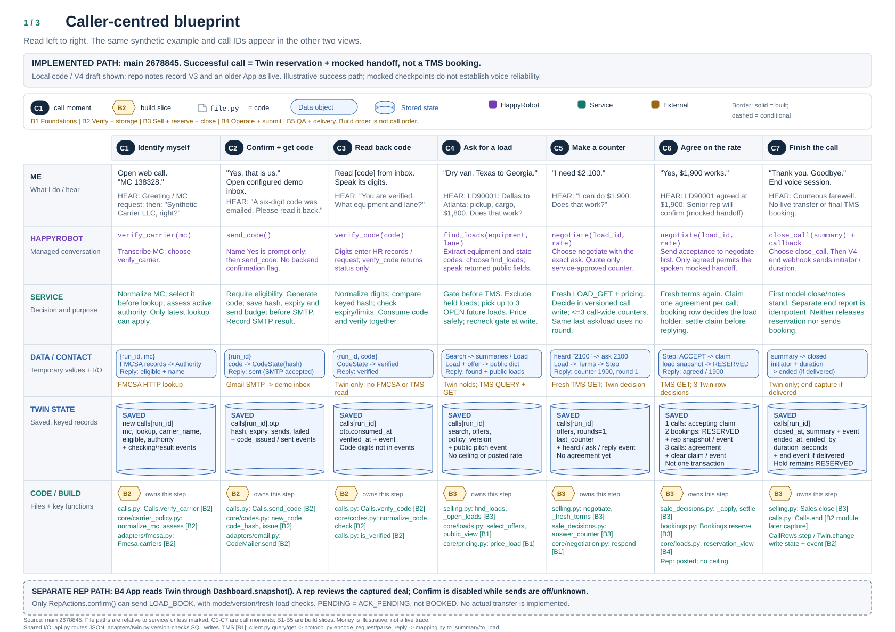

Vector originals: zoom without blur. Each PDF view is one A3 landscape page. C1-C7 are call moments; B1-B5 are build slices. Files, temporary objects and stored state use different symbols.
Point to a moment: inspect the corresponding code and data
Shared implementation behind every tool
- service/main.py,
build: connects explicit settings, adapters and orchestrators [B2]. - service/config.py,
load_settings: reads configuration at startup [B2]. - service/api.py,
_voice_routes: agent-key authentication, request validation and a 12-second deadline per voice request [B2, extended B3/B4]. - service/calls.py,
CallRows.step: saves a row's decision and event together [B2]. - service/adapters/twin.py,
Twin.change: version-checks a row update; retries a conflicting decision. No cross-table transaction [B2]. - service/adapters/tms/client.py,
TmsClient.query/get: bounded read retries, fresh TCP connection per attempt [B1]. - service/adapters/tms/protocol.py,
encode_request/parse_reply: builds and validates the line protocol [B1]. - service/adapters/tms/mapping.py,
to_summary/to_load: converts wire fields into typed data objects [B1]. - happyrobot/prompt-v4.md: draft routing, wording and tool choices; speech/model execution stays in HappyRobot [B2/B3 setup, B5 QA].
- service/dashboard.py,
Dashboard.snapshot/build_snapshot: derives operations outcomes and KPIs from saved rows [B4]. - ops-app/src/app/page.tsx,
HomePage: authenticated rep overview [B4]. - service/rep_actions.py,
RepActions.confirm: separate rep approval, fresh recheck, one booking send and saved receipt [B4].
The code links are relative to this repository. Open the listed function in your editor. The diagrams' build badges identify feature ownership, not the exact commit when every later refinement was added.
Implemented boundary and limits
HappyRobot handles managed speech, conversation turns and model tool choice. This repo does not implement an STT/TTS engine or establish which speech settings are available. Carrier-name confirmation is prompt behavior; the service has no name-confirmed flag.
The service keeps the expected code and private ceiling out of tool replies. Caller-spoken code still passes through HappyRobot records and the verification request. The demo inbox proves access to that inbox, not legal carrier identity. Public load dictionaries omit posted rate and ceiling; rep snapshots include posted rate but no ceiling.
A reservation spans call claim, booking reservation and call settlement, each with its own atomic row/event write. The first close stores the supplied notes. The separate end callback adds end data only if it runs and Twin accepts it; it cannot reconstruct absent notes or exact call-start timing.
The rep path can run while the call is active. It is outside voice control, not required to wait for hangup. Sends off/unknown disables Confirm. PENDING is acknowledgement, not final confirmation; unknown sends are not retried. No real handoff or automatic finalization is built.
Repo rollout notes record Version 4 live since 2026-11-04 and an older App build. Repo QA reports 44/44 on the fixed prompt, after the earlier 58/66; human voice acceptance is still open. See QA results and onboarding. This package documents a successful path without hiding those limits.